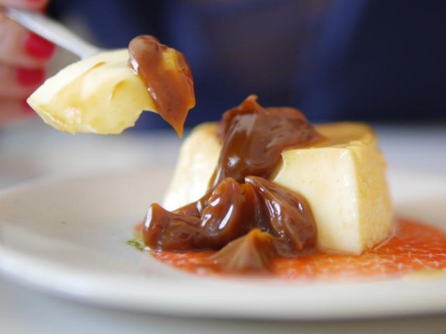

Flan Casero

Flan casero clásico: La receta de mi hermana!
¡Bienvenidos! Hoy, en Paulina Cocina, tenemos una receta de flan casero infalible. El tema es así, le pregunté a mi hermana qué postres típicos argentinos sabía hacer, y me dijo que tenía un súper poder con el flan casero, entonces tenía que enseñarnos sus trucos. Esta es una receta de flan fácil legendaria con la que cualquiera podía aprender cómo hacer flan. Encima hace flan con 5 huevos, que no será exactamente liviano, pero tampoco son los 12 huevos que te mete Doña Petrona en cada flan casero al horno, digamos todo…
¿Quién no ha comido esto en su casa? Siempre, cuando hablamos de flan de huevo casero, hay alguien que dice: el mejor lo hace mi mamá/abuela/tía y etc. Es claramente una receta familiar y tradicional.
Para hacer el mejor flan de huevo casero, es importante tener en cuenta algunos consejos e información clave. Así que vamos a ver un poco de historia, curiosidades pero también todos los tips necesarios.
Sobre el flan de huevo
El flan de huevo es un postre con historia
El flan de huevo es un postre tradicional y popular en muchas culturas alrededor del mundo. Es un postre de textura suave y delicada, hecho principalmente con huevos, leche y azúcar, aunque pueden haber variaciones en los ingredientes y métodos de preparación según la región.
Se cree que los orígenes del flan se remontan a la antigua Roma, donde los romanos preparaban un postre similar hecho con huevos, leche y miel. La receta se difundió por Europa durante la Edad Media y se adaptó en diferentes culturas.
Durante la ocupación árabe en España, muchos postres árabes influyeron en la gastronomía española, incluido el flan. Los árabes eran conocidos por su dominio en la preparación de postres con huevos y azúcar, lo que pudo haber influido en la evolución del flan.
La palabra “flan” proviene del francés “flaon” y del latín “flado”, que significa pastel o tarta. En algunos países, el flan también se conoce como “caramel custard” en inglés, “crème caramel” en francés o “pudim” en portugués.
7 tips para el mejor flan de huevo casero
- Ingredientes de calidad: Utiliza huevos frescos de buena calidad, leche y azúcar. La elección de ingredientes frescos y de buena calidad afectará significativamente el sabor y la textura del flan.
- Proporciones adecuadas: Asegúrate de seguir las proporciones adecuadas de huevos, leche y azúcar. Esto garantizará que el flan tenga la consistencia y el sabor adecuados.
- Caramelo: Preparar el caramelo correctamente es esencial para un buen flan. Asegúrate de que el caramelo esté en el punto justo de color ámbar y que no se queme.
- Temperatura del horno: Si vas a cocinar el flan en el horno, asegúrate de seguir las indicaciones de tiempo y temperatura adecuadas. El horneado lento y suave es clave para obtener un flan suave y bien cocido.
- Baño de agua: Cocinar el flan en un baño de agua ayuda a distribuir el calor de manera uniforme y a evitar que se cocine demasiado rápido, lo que puede resultar en una textura desigual.
- Enfriamiento adecuado: Una vez cocido, deja que el flan se enfríe a temperatura ambiente antes de refrigerarlo. Esto permitirá que los sabores se asienten y que la textura sea más firme.
- Desmoldado cuidadoso: Al desmoldar el flan, asegúrate de hacerlo con cuidado para evitar que se rompa. Puedes utilizar un cuchillo para ayudar a despegarlo de los lados del molde antes de darle la vuelta.
La historia detrás del flan casero
El flan tiene sus orígenes, como muchas otras cosas, en las europas. Se come desde hace mucho mucho tiempo y se solía servir con pimienta. Tenía un nombre largo y raro bastante impronunciable que por suerte derivó en el que tiene ahora y conocemos todos. Llegó a Latinoamérica con la conquista y acá, en argentina, lo adoptamos como uno de los postres clásicos de la comida de bodegón, ya sea mixto o con dulce de leche. No hay argentino que no haya hincado la cuchara en un flan con caramelo.
Recontra precisos mis datos, ¿vieron? Bueno, es para que más o menos sepan, igual lo importante acá es este maravilloso postre. Esta es una receta con el caramelo en seco, o sea con el azúcar directo en la sartén. Es una forma de hacer caramelo fácil pero que tiene su técnica, como todo.
El flan es un postre fácil y noble, por eso hoy le hacemos honor. También les dejo una receta del otro postre más noble que hay que es el budín de pan. y así nomás, los dejo con la receta de flan casero de mi hermana. Que la disfruten…
Receta de flan casero
Ingredientes
Si quieren hacerlo mas grande, duplican las cantidades
- 5 huevos
- 500cc. de leche
- 200g de azúcar
Como hacer flan de huevo casero, nunca falla eh!
- Lo primero que vamos a hacer es cascar nuestros 5 huevos en un bol y luego, vamos a agregar 100g de azúcar. Batimos un poco hasta romper el ligue de los huevos.
- Agregamos la leche. Sí, es mucha leche. No se asusten, queda muy líquido, pero se va a formar. Revolvemos con tenedor hasta que esté todo bien incorporado. Tener en cuenta que no hay que batir, no tiene que quedar espumoso, tiene que quedar bien mezclado y nada más, por eso lo hacemos a mano. Una vez que se mezclaron los ingredientes, reservamos.
VAMOS CON EL CARAMELO
- Vamos a poner una sartén a fuego medio sin nada de nada, vamos a hacer un caramelo seco. Allí vamos a volcar los otros 100g de azúcar que nos quedan y vamos a ir revolviendo constantemente con una cuchara de madera. Tarda, pero van a ver que se va a ir derritiendo y el azúcar va a ir pasando de ser granulosa a líquida y su color va a comenzar a ponerse marrón. Tengan cuidado que el no se les pase a marrón muy oscuro porque eso quiere decir que se está quemando y va a agarrar un gusto amargo que va a arruinar la receta.
Tengan siempre mucho cuidado con el caramelo. Tomen todas las precauciones posibles para no quemarse y traten de alejar a los niños en el momento en que lo hagan.
Finalmente, una vez que esté el punto (este es truco de mi hermana) agregamos una cucharada de agua hirviendo y volvemos a revolver un poquito más. Esto vuelve al caramelo más chicloso.
COMO COCINAR EL FLAN CASERO
- Vamos a poner la fuente en la que vamos a hacer el flan sobre otro recipiente con paredes más bajas (una tartera por ejemplo) . Esto es porque el flan se cocina a baño maría. Colorar primero el caramelo dentro de la flanera. Lo movemos un poquito para que cubra toda la superficie del molde y ahora sí, vamos a echar nuestra mezcla de flan adentro. Dice mi hermana que si ustedes quieren un flan bien lisito, como los que se compran en el supermercado, hay que colar la mezcla para que se le salgan los grumitos. sino, la dejan como está.
- Una vez que tenemos todo armado, vamos a poner agua dentro del recipiente que contiene la flanera para nuestro baño maría y también vamos a ponerle por encima una tapa de papel aluminio para que no se forme costrita. Si no les molesta, pueden no ponerlo también. Así lo vamos a llevar a horno mínimo (160º) por 40 minutos aprox.
- Para saber si el flan está listo, el truco es el mismo que para cualquier torta: se mete un cuchillo y debe salir seco. Si hacen esta prueba y sale así, el flan está listo. Antes de desmoldar, hay que dejar que el flan se enfríe del todo.
Una vez que esta friom se desmolda y se come. Asi de facil!
